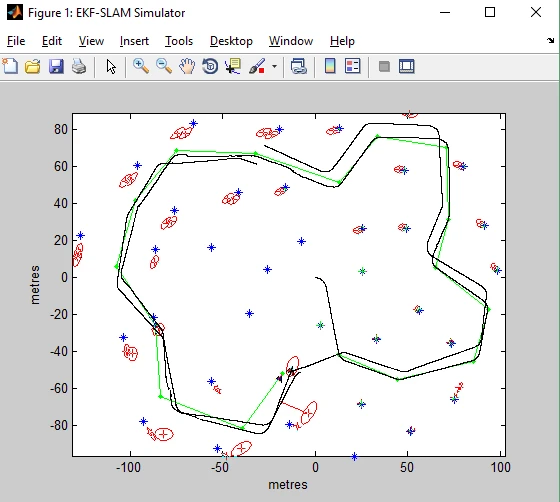
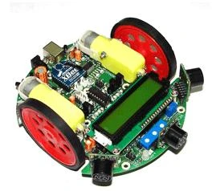

IIT Bombay internship · Estimation & embedded control
EKF-SLAM and embedded robot navigation
Extended Kalman Filter–based Simultaneous Localization and Mapping (EKF-SLAM) for joint pose and landmark estimation, alongside embedded mobile-robot navigation.

Research focus
I studied how motion and measurement uncertainty affect a robot’s estimate of its position and surroundings. The internship paired a probabilistic mapping study in MATLAB with a separate navigation implementation on a SPARK-V robot.
Methods and contributions
- Joint state estimation. Adapted an EKF-SLAM simulator to estimate robot pose and landmark positions together. Used Jacobian linearization to propagate uncertainty through the joint state covariance during prediction and measurement updates.
- Landmark association. Used uncertainty-aware nearest-neighbor association with Mahalanobis gating to match range–bearing measurements to existing landmarks and identify new features. Examined how repeated observations reduced landmark uncertainty.
- Reactive and embedded navigation. Extended the simulator with reactive steering from three sensor views. Programmed ultrasonic obstacle avoidance and wheel-encoder distance feedback in Embedded C on the SPARK-V’s ATmega16 controller.
Results
Waypoint revisits reduced map uncertainty in the MATLAB study. The SPARK-V demonstrated room traversal using obstacle avoidance and encoder feedback, connecting estimation concepts with practical sensing and control.
A closer look


Read more
Joint internship project with Alden J. Joseph. The MATLAB study adapted EKF-SLAM code credited to Tim Bailey and Juan Nieto in the report.